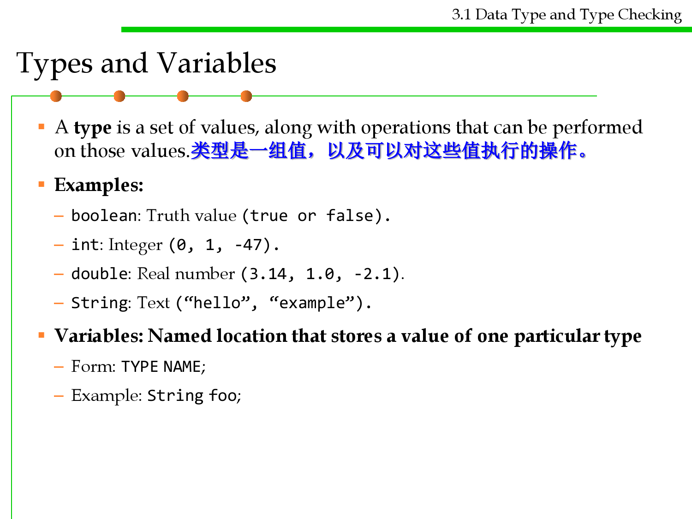
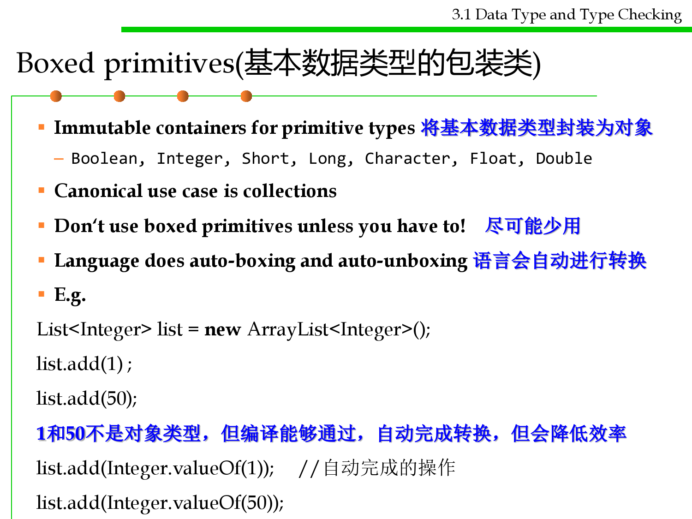
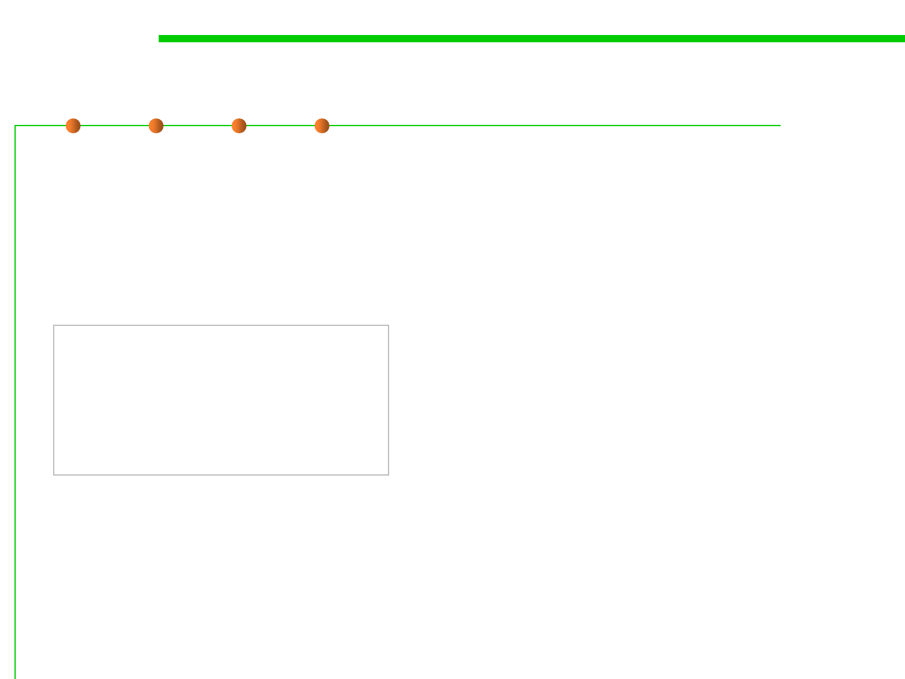
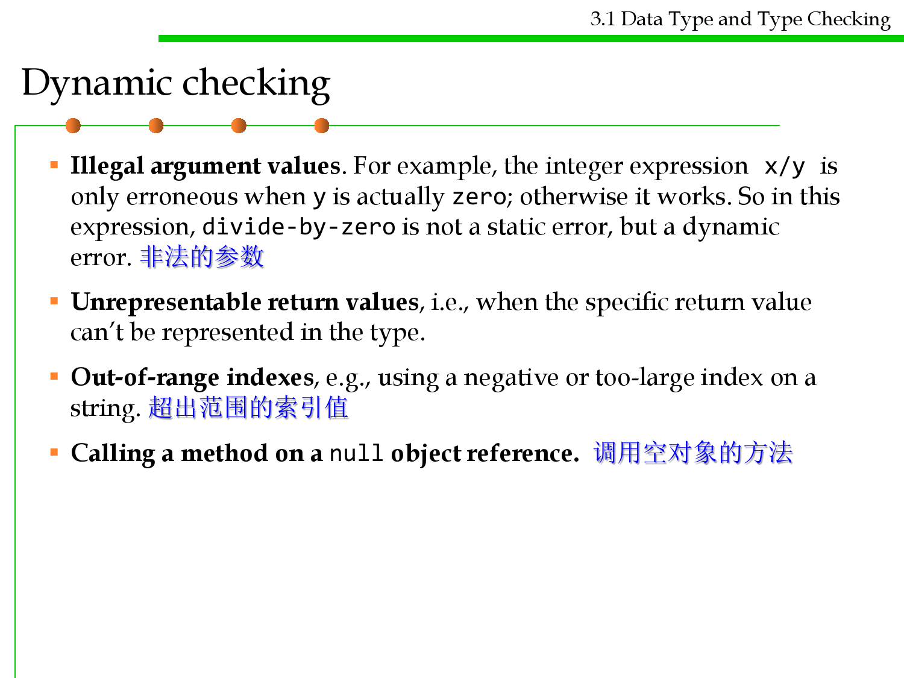
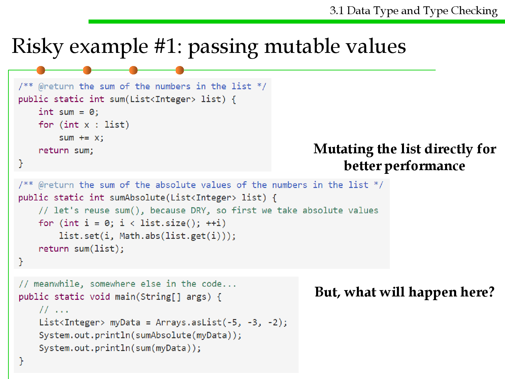

微信公众号[深容Pubmed文献检索] 1. 此处右键：选菜单【翻成中文（简体）】 2. 翻译后，此处右键：选菜单【打印...】成PDF格式
建议屏幕分辨率：1920X1080；如果屏幕太小，可以按Ctrl + 或 Ctrl -缩放网页。

Software Construction
Chapter 3: Abstract Data Type (ADT) and
Object-Oriented Programming (OOP)
3.1 Data Type and Type Checking
Xu Hanchuan
xhc@hit.edu.cn
March 12, 2019


Outline
3.1 Data Type and Type Checking
1. Data type in programming languages
2. Static vs. dynamic data types
3. Type checking
4. Mutability & Immutability(可变性和不可变性）
5. Snapshot diagram
6. Complex data types: Arrays and Collections
7. Useful immutable types
8. Null references
9. Summary

Objective of this lecture
3.1 Data Type and Type Checking
1. Get to know basic knowledge about data type, and static and
dynamic type checking in programming language, especially
Java.
2. Understand mutability and mutable objects
3. Identify aliasing and understand the dangers of mutability
4. Use immutability to improve correctness, clarity and
changeability
5. Use snapshot diagram to demonstrate the state of specific time
during a program’s execution.
6. Use Arrays and Collections to deal with complex data types
7. Know the harm of Null references and avoid it

Software Construction
1 Data type in programming
languages

Types and Variables
3.1 Data Type and Type Checking
▪ A type is a set of values, along with operations that can be performed
on those values.类型是一组值，以及可以对这些值执行的操作。
▪ Examples:
– boolean: Truth value (true or false).
– int: Integer (0, 1, -47).
– double: Real number (3.14, 1.0, -2.1).
– String: Text (“hello”, “example”).
▪ Variables: Named location that stores a value of one particular type
– Form: TYPE NAME;
– Example: String foo;

Types in Java
3.1 Data Type and Type Checking
▪ Java has several primitive types(基本数据类型) , among them:
– int (for integers like 5 and -200, but limited to the range ± 2^31, or
roughly ± 2 billion)
– long (for larger integers up to ± 2^63)
– boolean (for true or false)
– double (for floating-point numbers, which represent a subset of the real
numbers)
– char (for single characters like 'A' and '$' )
▪ Java also has object types(对象数据类型), for example:
– String represents a sequence of characters.
– BigInteger represents an integer of arbitrary size.
▪ By Java convention, primitive types are lowercase, while object
types start with a capital letter. 基本数据类型小写开始，对象数据类
型大写开始
Types in Java
3.1 Data Type and Type Checking
Primitives
int, long, byte, short, char,
float, double, boolean
No identity except their value
Immutable
On stack, exist only when in use
Can’t achieve unity of expression
Dirt cheap(使用成本低)
Object Reference Types
Classes, interfaces, arrays, enums,
annotations
Have identity distinct from value
Some mutable, some not
On heap, garbage collected
Unity of expression with generics
More costly
Hierarchy of object types
3.1 Data Type and Type Checking
▪ The root is Object (all non-primitives are objects) Object类是所有类
的基类
– All classes except Object have one parent class, specified with an extends
clause
class Guitar extends Instrument { ... }
▪ If extends clause omitted, defaults to Object 所有类默认都继承了
Object类
▪ A class is an instance of all its superclasses 子类是父类的一个实例，
如 Student 和 Teacher 都可以设计为Person的子类
– Inherits visible fields and methods from its superclasses
– Can override(重写) methods to change their behavior

3.1 Data Type and Type Checking
Boxed primitives(基本数据类型的包装类)
▪ Immutable containers for primitive types 将基本数据类型封装为对象
– Boolean, Integer, Short, Long, Character, Float, Double
▪ Canonical use case is collections
▪ Don‘t use boxed primitives unless you have to! 尽可能少用
▪ Language does auto-boxing and auto-unboxing 语言会自动进行转换
▪ E.g.
List<Integer> list = new ArrayList<Integer>();
list.add(1) ;
list.add(50);
1和50不是对象类型，但编译能够通过，自动完成转换，但会降低效率
list.add(Integer.valueOf(1)); //自动完成的操作
list.add(Integer.valueOf(50));
Operators
3.1 Data Type and Type Checking
▪ Operators: symbols that perform simple computations
– Assignment: =
– Addition: +
– Subtraction: -
– Multiplication: *
– Division: /
▪ Order of Operations: follows standard math rules:
– 1. Parentheses 括号优先
– 2. Multiplication and division 乘除优先
– 3. Addition and subtraction
▪ String concatenation (+)
– String text = "hello" + " world";
– text = text + " number " + 5; // text = "hello world number 5"
Operations
3.1 Data Type and Type Checking
▪ Operations are functions that take inputs and produce outputs (and
sometimes change the values themselves). There are three forms:
– 1. As an infix, prefix, or postfix operator. For example, a + b invokes the
operation + : int × int → int . 操作符的前、后、中缀
– 2. As a method of an object. For example, bigint1.add(bigint2) calls
the operation add: BigInteger × BigInteger → BigInteger . 对象的
方法
– 3. As a function. For example, Math.sin(theta) calls the operation
sin: double → double. Here, Math is not an object. It’s the class that
contains the sin function. 函数调用
3.1 Data Type and Type Checking
Overloading operators/operations 重载运算符和操作
▪ Some operations are overloaded in the sense that the same
operation name is used for different types. 相同的操作名称用于不同
的数据类型
▪ The arithmetic operators +, -, *, / are heavily overloaded for
the numeric primitive types in Java.
▪ Methods can also be overloaded. Most programming languages
have some degree of overloading.
▪ (to be discussed in Section 3.3 OOP)

Software Construction
2 Static vs. dynamic data types
3.1 Data Type and Type Checking
Static Typing vs. Dynamic Typing
▪ Java is a statically-typed language.
– The types of all variables are known at compile time (before the program
runs), and the compiler can therefore deduce the types of all expressions
as well. 在编译时需要知道所有变量的类型，编译器可以推断所有表达式的
类型
– If a and b are declared as int, then the compiler concludes that a+b is
also an int .
– The Eclipse environment does this while you’re writing the code, in fact,
so you find out about many errors while you’re still typing. IDE支持输入
时支持语法检查
▪ In dynamically-typed languages like Python, this kind of checking
is deferred until runtime (while the program is running).

Software Construction
3 Type checking

3.1 Data Type and Type Checking
Static Checking and Dynamic Checking
▪ Three kinds of automatic checking that a language can provide:
– Static checking: the bug is found automatically before the program even
runs.
– Dynamic checking: the bug is found automatically when the code is
executed.
– No checking: the language doesn’t help you find the error at all. You have
to watch for it yourself, or end up with wrong answers.
▪ Needless to say, catching a bug statically is better than catching it
dynamically, and catching it dynamically is better than not
catching it at all.

Mismatched Types
▪ Java verifies that types always match:
▪ String five = 5; // ERROR!
test.java.2: incompatible types
found: int
required: java.lang.String
String five = 5;
3.1 Data Type and Type Checking

3.1 Data Type and Type Checking
Conversion by casting 类型转换
int a = 2;
double a = 2;
int a = 18.7;
int a = (int)18.7;
double a = 2/3;
double a = (double)2/3;
// a = 2
// a = 2.0 (Implicit)
// ERROR
// a = 18
// a = 0.0
// a = 0.6666…

Static checking
3.1 Data Type and Type Checking
▪ Static checking means checking for bugs at compile time.
▪ Bugs are the bane(灾祸) of programming.
▪ Static typing prevents a large class of bugs from infecting your
program: to be precise, bugs caused by applying an operation to the
wrong types of arguments. 避免因使用错误类型的操作而导致的bug
▪ If you write a broken line of code like:
"5" * "6"
that tries to multiply two strings, then static typing will catch this error
while you’re still programming, rather than waiting until the line is
reached during execution.

Static checking
3.1 Data Type and Type Checking
▪ Syntax errors, like extra punctuation or spurious words. Even
dynamically-typed languages like Python do this kind of static
checking. 动态类型的语言也会进行此类检查
▪ Wrong names, like Math.sine(2) . (The right name is sin)
▪ Wrong number of arguments, like Math.sin(30, 20) .
▪ Wrong argument types, like Math.sin("30") .
▪ Wrong return types, like return "30"; from a function that’s
declared to return an int .

Dynamic checking
3.1 Data Type and Type Checking
▪ Illegal argument values. For example, the integer expression x/y is
only erroneous when y is actually zero; otherwise it works. So in this
expression, divide-by-zero is not a static error, but a dynamic
error. 非法的参数
▪ Unrepresentable return values, i.e., when the specific return value
can’t be represented in the type.
▪ Out-of-range indexes, e.g., using a negative or too-large index on a
string. 超出范围的索引值
▪ Calling a method on a null object reference. 调用空对象的方法
Static vs. Dynamic Checking
3.1 Data Type and Type Checking
▪ Static checking tends to be about types, errors that are independent
of the specific value that a variable has.静态检查针对类型，与变量
特定值无关的错误
– Static typing guarantees that a variable will have some value from that set,
but we don’t know until runtime exactly which value it has. 某些变量的值
只有运行时才会知道
– So if the error would be caused only by certain values, like divide-by-zero
or index-out-of-range then the compiler won’t raise a static error about it.
▪ Dynamic checking, by contrast, tends to be about errors caused by
specific values. 动态检查针对由特定值引起的错误
3.1 Data Type and Type Checking
Primitive Types Are Not True Numbers
▪ One trap in Java – and many other programming languages – is
that its primitive numeric types have corner cases(特例) that do not
behave like the integers and real numbers we’re used to.
▪ As a result, some errors that really should be dynamically checked
are not checked at all.
– Integer division: 5/2 does not return a fraction, it returns a truncated
integer.
– Integer overflow. If the computation result is too positive or too negative
to fit in that finite range, it quietly overflows and returns a wrong answer.
(no static / dynamic checking!) e.g., int big = 200000*200000;
– Special values in floating-point types. NaN (“Not a Number”),
POSITIVE_INFINITY, and NEGATIVE_INFINITY.
• Int a=resulOfFunction(XX); // E.g., -9
• the result of Math.sqrt(a) is NaN, not a dynamic error!
• What is the result of Math.sqrt(a) + 6 ?

Software Construction
4 Mutability and Immutability

Assignment 赋值
▪ Use “=” to give variables a value
▪ Example:
– String foo;
– foo = “IAP 6.092”;
3.1 Data Type and Type Checking
▪ Assignment can be combined with a variable declaration
▪ Example:
– double badPi = 3.14;
– boolean isJanuary = true;

3.1 Data Type and Type Checking
Changing a variable or its value
▪ What’s the distinction between changing a variable and changing a
value? 改变变量和改变值的区别
– When you assign to a variable, you’re changing where the variable’s
arrow points. You can point it to a different value. 对变量赋值是在改变变
量的指向，指向不同的值
– When you assign to the contents of a mutable value – such as an array or
list – you’re changing references inside that value. 改变可变变量的内容时
，是在改变变量内部内容的引用
▪ Change is a necessary evil.
▪ Good programmers avoid things that change, because they may
change unexpectedly.

Immutability 不变性
3.1 Data Type and Type Checking
▪ Immutability is a major design principle. 不变性是一种主要的设计原则
▪ Immutable types are types whose values can never change once they
have been created. 不变数据类型创建完后，值不可修改
– Java also gives us immutable references: variables that are assigned once and
never reassigned. 不变引用，一旦指定引用位置，不可再次指定
▪ To make a reference immutable, declare it with the keyword final:
final int n = 5;
▪ If the Java compiler isn’t convinced that your final variable will only
be assigned once at runtime, then it will produce a compiler error. So
final gives you static checking for immutable references. Final关键
字对不可变引用提供了静态检查的支持

Immutability
3.1 Data Type and Type Checking
▪ It’s good practice to use final for declaring the parameters of a
method and as many local variables as possible. 利用final来声明方
法的参数和局部变量。
▪ Like the type of the variable, these declarations are important
documentation, useful to the reader of the code and statically
checked by the compiler. 有利于代码理解和编译器的静态检查
▪ Note:
– A final class declaration means it cannot be inherited.
– A final variable means it always contains the same value/reference
but cannot be changed;
– A final method means it cannot be overridden by subclasses;

Mutability and Immutability
3.1 Data Type and Type Checking
▪ Objects are immutable: once created, they always represent the
same value.
▪ Objects are mutable: they have methods that change the value of the
object.
String as an immutable type
3.1 Data Type and Type Checking
▪ String is an example of an immutable type.
▪ A String object always represents the same string.
▪ Since String is immutable, once created, a String object always
has the same value.
▪ To add something to the end of a String, you have to create a new
String object:
Note: this is a snapshot diagram
3.1 Data Type and Type Checking
StringBuilder as a mutable type
▪ StringBuilder is an example of a mutable type.
▪ It has methods to delete parts of the string, insert or replace
characters, etc.
▪ This class has methods that change the value of the object, rather
than just returning new values:
Mutability and Immutability
3.1 Data Type and Type Checking
▪ So what? In both cases, you end up with s and sb referring to the
string of characters "ab".
– The difference between mutability and immutability doesn’t matter much
when there’s only one reference to the object. 当仅有一个引用时，二者
的使用区别不大
▪ But there are big differences in how they behave when there are
other references to the object.当有多个引用时，二者的区别很大
– For example, when another variable t points to the same String object as
s, and another variable tb points to the same StringBuilder as sb , then
the differences between the immutable and mutable objects become more
evident.
Advantage of mutable types
3.1 Data Type and Type Checking
▪ Using immutable strings, this makes a lot of temporary copies
– The first number of the string ( "0" ) is actually copied n times in the
course of building up the final string, the second number is copied n-1
times, and so on.
– It actually costs O(n2) time just to do all that copying, even though we only
concatenated n elements.
▪ StringBuilder is designed to minimize this copying.
– It uses a simple but clever internal data structure to avoid doing any
copying at all until the very end, when you ask for the final String with
a toString() call:

Advantage of mutable types
3.1 Data Type and Type Checking
▪ Getting good performance is one reason why we use mutable
objects.
▪ Another is convenient sharing: two parts of your program can
communicate more conveniently by sharing a common mutable data
structure.
▪ “Global variables”
▪ But you must have known the disadvantages of global variables…

Risks of mutation
3.1 Data Type and Type Checking
▪ Since mutable types seem much more powerful than immutable
types, why on earth would you choose the immutable one?
– StringBuilder should be able to do everything that String can do, plus
set() and append() and everything else.
▪ The answer is that immutable types are safer from bugs, easier to
understand, and more ready for change.
– Mutability makes it harder to understand what your program is doing,
and much harder to enforce contracts.
▪ Tradeoff between performance and safety?

3.1 Data Type and Type Checking
Risky example #1: passing mutable values
Mutating the list directly for
better performance
But, what will happen here?
Risk
3.1 Data Type and Type Checking
▪ Safe from bugs?
– In this example, it’s easy to blame the implementer of sumAbsolute() for
going beyond what its spec allowed.
– But really, passing mutable objects around is a latent bug. It’s just waiting
for some programmer to inadvertently mutate that list, often with very
good intentions like reuse or performance, but resulting in a bug that may
be very hard to track down. 传递可变对象容易产生潜在错误，且难以跟踪
▪ Easy to understand?
– When reading main() , what would you assume about sum() and
sumAbsolute() ?
– Is it clearly visible to the reader that myData gets changed by one of them?
3.1 Data Type and Type Checking
Risky example #2: returning mutable values
▪ Date as a built-in Java class, is a mutable type.
缓存结果，避免多次重复计算
修改Party召开月份
What will happen here?
Risk
▪ In both of these examples — the
List<Integer> and the Date — the
problems would have been
completely avoided if the list and
the date had been immutable types.
▪ The bugs would have been
impossible by design.
▪ You should never use Date !
– Use one of the classes from package
java.time : LocalDateTime , Instant ,
etc.
– All guarantee in their specifications that
they are immutable .
3.1 Data Type and Type Checking

How to modify the code?
3.1 Data Type and Type Checking
▪ In Example 2:
– To return a new copy of the object (defensive copying), i.e.,
return new Date(groundhogAnswer.getTime());
– However, use extra space for every client — even if 99% of the clients never
mutate the date it returns. We may end up with lots of copies of the first
day of spring throughout memory. 缺点：增加了额外的内存空间占用
▪ If we used an immutable type instead, then different parts of the
program could safely share the same values in memory, so less
copying and less memory space is required. 采用不可变类型，可通
过内存共享相同的值，降低复制带来的内存空间占用
▪ Immutability can be more efficient than mutability, because
immutable types never need to be defensively copied.
3.1 Data Type and Type Checking
Aliasing is what makes mutable types risky
▪ Using mutable objects is just fine if you are using them entirely
locally within a method, and with only one reference to the object. 只
在局部使用或者只有一个引用时，可变类型的使用是安全的
▪ What led to the problem in the two examples we just looked at was
having multiple references, also called aliases, for the same mutable
object. 对可变类型的多个引用(别名)是带来风险的原因
– In the List example, the same list is pointed to by both list (in sum and
sumAbsolute) and myData (in main). One programmer ( sumAbsolute ’s)
thinks it’s ok to modify the list; another programmer ( main ’s) wants the
list to stay the same. Because of the aliases, main ’s programmer loses.
– In the Date example, there are two variable names that point to the Date
object, groundhogAnswer and partyDate . These aliases are in completely
different parts of the code, under the control of different programmers
who may have no idea what the other is doing.
3.1 Data Type and Type Checking
More Examples of Defensive Copying
通过构造函数，
修改了内部private变量
3.1 Data Type and Type Checking
More Examples of Defensive Copying
通过返回值，
修改了内部private变量
d

Software Construction
5 Snapshot diagram
as a code-level, run-time, and
moment view
3.1 Data Type and Type Checking
Software construction: transformation btw views
review, static analysis
Build-time
programming
Moment refactoring
Code design
Component
Period
Code
Churn Version Control
CI and
evolution
Version
build
install
deploy
Run-time
Moment
Code
Snapshot
debug
testing
Physical
Architecture
deploy
profiling, dumping
Call
Period
Graph
logging
Thread and
Process

Snapshot diagrams
3.1 Data Type and Type Checking
▪ It will be useful for us to draw pictures of what’s happening at
runtime, in order to understand subtle questions.
▪ Snapshot diagrams represent the internal state of a program at
runtime – its stack (methods in progress and their local variables)
and its heap (objects that currently exist).
▪ Why we use snapshot diagrams?
– To talk to each other through pictures.
– To illustrate concepts like primitive types vs. object types, immutable
values vs. immutable references, pointer aliasing, stack vs. heap,
abstractions vs. concrete representations.
– To help explain your design for your team project (with each other and
with your TA).
– To pave the way for richer design notations in subsequent courses.
3.1 Data Type and Type Checking
Mutating values vs. reassigning variables
▪ Snapshot diagrams give us a way to visualize the distinction
between changing a variable and changing a value:
– When you assign to a variable or a field, you’re changing where the
variable’s arrow points. You can point it to a different value.
– When you assign to the contents of a mutable value – such as an array or
list – you’re changing references inside that value.

3.1 Data Type and Type Checking
Primitive and Object values in Snapshot Diagram
▪ Primitive values
– Primitive values are represented by bare constants. The incoming arrow is
a reference to the value from a variable or an object field.
▪ Object values
– An object value is a circle labeled by its type. When we want to show
more detail, we write field names inside it, with arrows pointing out to
their values. For still more detail, the fields can include their declared
types. Some people prefer to write x:int instead of int x , but both are
fine.

3.1 Data Type and Type Checking
Reassignment and immutable values
▪ For example, if we have a String variable s , we can reassign it from
a value of "a" to "ab" .
String s = "a";
s = s + "b";
▪ String is an example of an immutable type, a type whose values
can never change once they have been created.
▪ Immutable objects (intended by their designer to always represent
the same value) are denoted in a snapshot diagram by a double
border, like the String objects in our diagram.

Mutable values
3.1 Data Type and Type Checking
▪ By contrast, StringBuilder (a built-in Java class) is a mutable
object that represents a string of characters, and it has methods that
change the value of the object:
StringBuilder sb = new StringBuilder("a");
sb.append("b");
▪ These two snapshot diagrams look very different, which is good:
the difference between mutability and immutability will play an
important role in making code safe from bugs .

Immutable references
3.1 Data Type and Type Checking
▪ Java also gives us immutable references: variables that are
assigned once and never reassigned. To make a reference
immutable, declare it with the keyword final:
final int n = 5;
▪ If the Java compiler isn’t convinced that your final variable will
only be assigned once at runtime, then it will produce a compiler
error. So final gives a static checking for immutable references.
▪ In a snapshot diagram, an immutable reference (final) is denoted
by a double arrow.

Immutable references
3.1 Data Type and Type Checking
▪ Here’s an object whose id never changes (it can’t be reassigned to a
different number), but whose age can change.
▪ We can have an immutable reference to a mutable value (for
example: final StringBuilder sb) whose value can change even
though we’re pointing to the same object. 指向可变值的不可变引用(
引用不可变，值可变)
▪ We can also have a mutable reference to an immutable value (like
String s), where the value of the variable can change because it
can be re-pointed to a different object. 指向不可变值的可变引用(值
不可变，引用可变)

Software Construction
6 Complex data types: Arrays and
Collections

Array
3.1 Data Type and Type Checking
▪ Arrays are fixed-length sequences of another type T. For example,
here’s how to declare an array variable and construct an array value
to assign to it:
int[] a = new int[100];
Why 100?
▪ The int[] array type includes all possible array
values, but a particular array value, once created, int[] a = new int[100];
can never change its length.
int i = 0;
int n = 3;
▪ Operations on array types include:
while (n != 1) {
a[i] = n;
– indexing: a[2]
i++;
if (n % 2 == 0) {
– assignment: a[2]=0
n = n / 2;
}
– length: a.length
else {
n = 3 * n + 1;
}
}
a[i] = n;
i++;
List
3.1 Data Type and Type Checking
▪ Instead of a fixed-length array, let’s use the List type.
▪ Lists are variable-length sequences of another type T .
List<Integer> list = new ArrayList<Integer>();
▪ Some of its operations:
– indexing: list.get(2)
– assignment: list.set(2, 0)
– length: list.size()
▪ Note 1: List is an interface
▪ Note 2: members in a List must be
an object.
List<Integer> list =
new ArrayList<Integer>();
int n = 3;
while (n != 1) {
list.add(n);
if (n % 2 == 0) {
n = n / 2;
} else {
n = 3 * n + 1;
}
}
list.add(n);

Iterating
▪ Iterating an array
int max = 0;
for (int i=0; i<array.length; i++) {
max = Math.max(array[i], max);
}
▪ Iterating a List
int max = 0;
for (int x : list) {
max = Math.max(x, max);
}
3.1 Data Type and Type Checking

Set
3.1 Data Type and Type Checking
▪ A Set is an unordered collection of zero or more unique objects.
▪ An object cannot appear in a set multiple times. Either it’s in or it’s
out.
– s1.contains(e) test if the set contains an element
– s1.containsAll(s2) test whether s1 ⊇ s2
– s1.removeAll(s2) remove s2 from s1
▪ Set is an abstract interface

Map
3.1 Data Type and Type Checking
▪ A Map is similar to a dictionary (key-value) 键-值
– map.put(key, val)
add the mapping key → val
– map.get(key)
get the value for a key
– map.containsKey(key)
test whether the map has a key
– map.remove(key)
delete a mapping
▪ Map is an abstract interface


Building a list from an Array
3.1 Data Type and Type Checking
▪ Arrays.asList(new String[] { "a", "b", "c" })
3.1 Data Type and Type Checking
Declaring List, Set, and Map variables
▪ With Java collections we can restrict the type of objects contained in
the collection.
▪ When we add an item, the compiler can perform static checking to
ensure we only add items of the appropriate type.当添加一个item时
，编译器执行静态检查，确保只添加合适类型的item。
▪ Then, when we pull out an item, we are guaranteed that its type will
be what we expect.
▪ List<Integer> list = new ArrayList<Integer>();
▪ List<Integer> list = new ArrayList<>();

3.1 Data Type and Type Checking
Declaring List, Set, and Map variables
▪ Declaration:
List<String> cities;
Set<Integer> numbers;
// a List of Strings
// a Set of Integers
Map<String, Turtle> turtles;
// a Map with String keys and Turtle values
▪ We cannot create a collection of primitive types.
– For example, Set<int> does not work.
– However, int have an Integer wrapper we can use (e.g. Set<Integer>
numbers).
– When using:
sequence.add(5);
// add 5 to the sequence
int second = sequence.get(1); // get the second element
3.1 Data Type and Type Checking
Creating List, Set, and Map variables
▪ Java helps distinguish between
– the specification of a type – what does it do? Abstract Interface
– The implementation – what is the code?
Concrete Class
▪ List , Set , and Map are all interfaces:
– They define how these respective types work, but they don’t provide
implementation code. 定义了类型的工作方式，但不提供实现代码。
– Advantage: users have the right to choose different implementations in
different situations. 优点: 用户有权在不同情况下选择不同的实现。
▪ Implementations of List , Set ,
and Map :
List<String> firstNames = new ArrayList<String>();
List<String> lastNames = new LinkedList<String>();
– List:
ArrayList
and LinkedList
List<String> firstNames = new ArrayList<>();
List<String> lastNames = new LinkedList<>();
– Set: HashSet
Set<Integer> numbers = new HashSet<>();
– Map: HashMap
Map<String,Turtle> turtles = new HashMap<>();
Java Collection
3.1 Data Type and Type Checking
Iteration
3.1 Data Type and Type Checking
List<String> cities
Set<Integer> numbers
Map<String,Turtle> turtles
= new ArrayList<>();
= new HashSet<>();
= new HashMap<>();
for (String city : cities) {
System.out.println(city);
}
for (int num : numbers) {
System.out.println(num);
}
for (int ii = 0; ii < cities.size(); ii++) {
System.out.println(cities.get(ii));
}
for (String key : turtles.keySet()) {
System.out.println(key + ": " + turtles.get(key));
}

Iterator as a mutable type
3.1 Data Type and Type Checking
▪ Iterator is an object that steps through a collection of elements
and returns the elements one by one. 迭代器是一个对象，它遍历一组
元素并逐个返回元素。
▪ Iterators are used under the covers in Java when you’re using a for
(... : ...) loop to step through a List or array. 遍历时默认调用迭代器
▪ An iterator has two methods:
– next() returns the next element in the collection --- this is a mutator
method!
– hasNext() tests whether the iterator has reached the end of the collection.
3.1 Data Type and Type Checking
An example iterator for ArrayList<String>

3.1 Data Type and Type Checking
An example iterator for ArrayList<String>
Class
definition
Instance
variables
Specification
Invariants
Constructor
Instance
method
3.1 Data Type and Type Checking
Snapshot diagram of MyIterator
3.1 Data Type and Type Checking
Mutation undermines an iterator
▪ Suppose we have a list of subjects represented as strings. We want
a method dropCourse6 that will delete the Course 6 subjects from
the list, leaving the other subjects behind.
▪ First write the specification (to be introduced in next lecture)
▪ Next, write the test cases (to be studied in Chapter 7)
3.1 Data Type and Type Checking
Mutation undermines an iterator
▪ The implementation:
▪ Run it
Why?

3.1 Data Type and Type Checking
Mutation undermines an iterator
▪ Note that this isn’t just a bug in our MyIterator. The built-in
iterator in ArrayList suffers from the same problem, and so does
the for loop that’s syntactic sugar for it. The problem just has a
different symptom. If you used this code instead:
▪ Then you’ll get a ConcurrentModificationException. The built-in
iterator detects that you’re changing the list under its feet, and cries
foul.
▪ How to fix?

Software Construction
7 Useful immutable types
Useful immutable types
3.1 Data Type and Type Checking
▪ The primitive types and primitive wrappers are all immutable. If
you need to compute with large numbers, BigInteger and
BigDecimal are immutable.
▪ Don’t use mutable Date, use the appropriate immutable type from
java.time based on the granularity of timekeeping you need.
▪ The usual implementations of Java’s collections types — List, Set,
Map — are all mutable: ArrayList, HashMap, etc. The Collections
utility class has methods for obtaining unmodifiable views of
these mutable collections:
– Collections.unmodifiableList
– Collections.unmodifiableSet
– Collections.unmodifiableMap
a wrapper around the underlying
list/set/map

Unmodifiable Wrappers
3.1 Data Type and Type Checking
▪ The unmodifiable wrappers take away the ability to modify the
collection by intercepting all the operations that would modify the
collection and throwing an UnsupportedOperationException.
▪ Unmodifiable wrappers have two main uses, as follows:
– To make a collection immutable once it has been built. In this case, it's
good practice not to maintain a reference to the backing collection. This
absolutely guarantees immutability.
– To allow certain clients read-only access to your data structures. You
keep a reference to the backing collection but hand out a reference to the
wrapper. In this way, clients can look but not modify, while you maintain
full access.
Useful immutable types
3.1 Data Type and Type Checking
▪ An Example
public class Student {
private String name;
private List<Course> courses;
public Student(String name,List<Course> courses>{
this.name=name;
this.courses=courses;
}
public List<Course> getCourses() {
return courses;
return
}
Collections.unmodifiableList(courses);
public void setCourses(List<Course> courses) {
this.courses = courses;
}
}

Unmodifiable Wrappers
3.1 Data Type and Type Checking
▪ public static <T> Collection<T>
unmodifiableCollection(Collection<? extends T> c);
▪ public static <T> Set<T> unmodifiableSet(Set<? extends T> s);
▪ public static <T> List<T> unmodifiableList(List<? extends T>
list);
▪ public static <K,V> Map<K, V> unmodifiableMap(Map<? extends K,
? extends V> m);
▪ public static <T> SortedSet<T>
unmodifiableSortedSet(SortedSet<? extends T> s);
▪ public static <K,V> SortedMap<K, V>
unmodifiableSortedMap(SortedMap<K, ? extends V> m);

Software Construction
8 Null references

Null references
3.1 Data Type and Type Checking
▪ In Java, references to objects and arrays can also take on the special
value Null , which means that the reference doesn’t point to an
object. Null values are an unfortunate hole in Java’s type system.
▪ Primitives cannot be null and the compiler will reject such
attempts with static errors:
int size = null; //illegal
▪ Can assign null to any non-primitive variable, and the compiler
happily accepts this code at compile time. But you’ll get errors at
runtime because you can’t call any methods or use any fields with
one of these references (throws NullPointerExceptions):
String name = null;
name.length();
int[] points = null;
points.length;
▪ null is not the same as an empty string "" or an empty array.

Null references
3.1 Data Type and Type Checking
▪ Arrays of non-primitives and collections like List might be non-
null but contain null as a value 非空的collection可以包含null值
▪ These nulls are likely to cause errors as soon as someone tries to
use the contents of the collection.
▪ Null values are troublesome and unsafe, so much
so that you’re well advised to remove them from
your design vocabulary.
▪ Null values are implicitly disallowed in parameters and return
values.
From Guava (by Google)
3.1 Data Type and Type Checking
▪ “Careless use of null can cause a staggering variety of bugs. Studying
the Google code base, we found that something like 95% of
collections weren’t supposed to have any null values in them, and
having those fail fast rather than silently accept null would have
been helpful to developers.”粗心地使用null会导致各种各样的错误，
接受null值不是好的策略
▪ “Additionally, null is unpleasantly ambiguous. It’s rarely obvious
what a null return value is supposed to mean — for example,
Map.get(key) can return null either because the value in the map is
null , or the value is not in the map. Null can mean failure, can mean
success, can mean almost anything. Using something other than null
makes your meaning clear .” null的含义含糊不清。Map.get(key)返
回null可能是key对应的值就是null，或者map中没有此key对应的值


Software Construction
Summary

Summary of this lecture
3.1 Data Type and Type Checking
▪ Static type checking:
– Safe from bugs. Static checking helps with safety by catching type errors
and other bugs before runtime.
– Easy to understand. It helps with understanding, because types are
explicitly stated in the code.
– Ready for change. Static checking makes it easier to change your code by
identifying other places that need to change in tandem. For example,
when you change the name or type of a variable, the compiler
immediately displays errors at all the places where that variable is used,
reminding you to update them as well.

Summary
3.1 Data Type and Type Checking
▪ Mutability is useful for performance and convenience, but it also
creates risks of bugs by requiring the code that uses the objects to
be well-behaved on a global level, greatly complicating the
reasoning and testing we have to do to be confident in its
correctness.
▪ Make sure you understand the difference between an immutable
object (like a String ) and an immutable reference (like a final
variable).
▪ Snapshot diagrams can help with this understanding.
– Objects are values, represented by circles in a snapshot diagram, and an
immutable one has a double border indicating that it never changes its
value.
– A reference is a pointer to an object, represented by an arrow in the
snapshot diagram, and an immutable reference is an arrow with a double
line, indicating that the arrow can’t be moved to point to a different object.

Summary
3.1 Data Type and Type Checking
▪ The key design principle is immutability: using immutable objects
and immutable references as much as possible.
– Safe from bugs . Immutable objects aren’t susceptible(易受影响的) to bugs
caused by aliasing. Immutable references always point to the same object.
– Easy to understand. Because an immutable object or reference always
means the same thing, it’s simpler for a reader of the code to reason about
— they don’t have to trace through all the code to find all the places where
the object or reference might be changed, because it can’t be changed.
– Ready for change. If an object or reference can’t be changed at runtime,
then code that depends on that object or reference won’t have to be
revised when the program changes.


Software Construction
The end
March 12, 2019